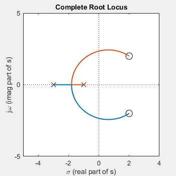
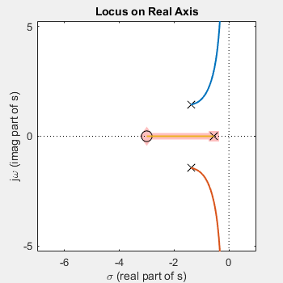
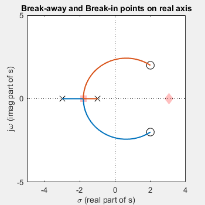
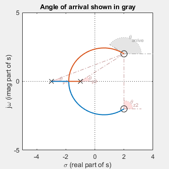
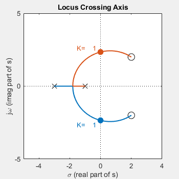
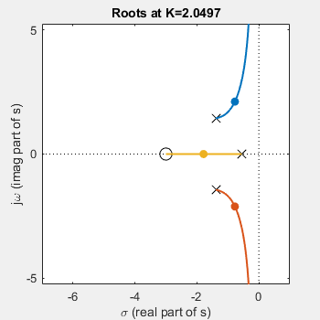
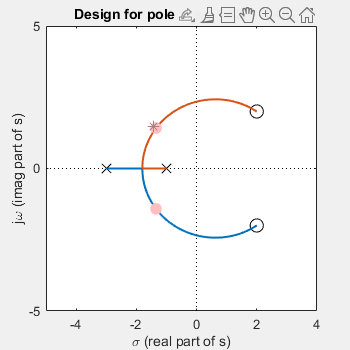

s^2 - 4 s + 8
G(s)H(s)= ----------------
s^2 + 4 s + 3
For the open loop transfer function, G(s)H(s):
We have n=2 poles at s = -3, -1.
We have m=2 finite zeros at s = 2± 2j.
So there exists q=0 zeros as |s| goes to infinity (q = n-m = 2-2 = 0).
We can rewrite the open loop transfer function as
G(s)H(s)=N(s)/D(s) where N(s) is the numerator polynomial, and
D(s) is the denominator polynomial.
N(s)= s^2 - 4 s + 8, and
D(s)= s^2 + 4 s + 3.
Characteristic Equation is 1+KG(s)H(s)=0, or 1+KN(s)/D(s)=0,
or D(s)+KN(s) = s^2 + 4 s + 3+ K( s^2 - 4 s + 8 ) = 0

As you can see, the locus is symmetric about the real axis
The open loop transfer function, G(s)H(s), has 2 poles, therefore the
locus has 2 branches.
Each branch is displayed in a different color.
Root locus starts (K=0) at poles of open loop transfer function, G(s)H(s).
These are shown by an "x" on the diagram above
As K goes to infinity the location of closed loop poles move
to the zeros of the open loop transfer function, G(s)H(s).
Finite zeros are shown by a "o" on the diagram above.

The root locus exists on real axis to left of an odd number of
poles and zeros of open loop transfer function, G(s)H(s), that are
on the real axis.
These real pole and zero locations are highlighted on diagram,
along with the portion of the locus that exists on the real axis.
Root locus exists on real axis between:
-1 and -3
... because on the real axis,
we have 2 poles at s = -1, -3,
and we have 0 zeros.
In the open loop transfer function, G(s)H(s), we have n=2 finite poles,
and m=2 finite zeros, therefore we have q=n-m=0 zeros at infinity.
Because q=0, there are no asymptotes.

Break Out (or Break In) points occur where N(s)D'(s)-N'(s)D(s)=0, or
-8 s^2 + 10 s + 44 = 0. (details below*)
This polynomial has 2 roots at s = 3.1, -1.8.
From these 2 roots, there exists 2 real roots at s = 3.1, -1.8.
These are highlighted on the diagram above (with squares or diamonds.)
Not all of these roots are on the locus. Of these 2 real roots,
there exists 1 root at s = -1.8 on the locus (i.e., K>0).
Break-away (or break-in) points on the locus are shown by squares.
(Real break-away (or break-in) with K less than 0 are shown with diamonds).
* N(s) and D(s) are numerator and denominator polynomials
of G(s)H(s), and the tick mark, ', denotes differentiation.
N(s) = s^2 - 4 s + 8
N'(s) = 2 s - 4
D(s)= s^2 + 4 s + 3
D'(s)= 2 s + 4
N(s)D'(s)= 2 s^3 - 4 s^2 - 1.7764e-15 s + 32
N'(s)D(s)= 2 s^3 + 4 s^2 - 10 s - 12
N(s)D'(s)-N'(s)D(s)= -8 s^2 + 10 s + 44
Here we used N(s)D'(s)-N'(s)D(s)=0, but we could multiply
by -1 and use N'(s)D(s)-N(s)D'(s)=0.
No complex poles in loop gain, so no angles of departure.

Find angle of arrival to pole at 2+2i
Note: Theta_p2 denotes angle labeled theta with subscript p2.
Theta_z2=angle( (Arriving zero) - (zero at -1) ).
Theta_z2=angle((2+2i) - (2-2i)) = angle(0+4i) = 90°
Theta_p1=angle( (Arriving zero) - (pole at -3) ).
Theta_p1=angle((2+2i) - (-3)) = angle(5+2i) = 21.8014°
Theta_p2=angle((2+2i) - (-1)) = angle(3+2i) = 33.6901°
Angle of arrival is equal to:
Theta_arrive = 180° - sum(angle to zeros) + sum(angle to poles).
Theta_arrive = 180° - 90+55.4915.
Theta_arrive = 145°.
This angle is shown in gray.
It may be hard to see if it is near 0°.

Locus crosses imaginary axis at 1 value of K.
These values are normally determined by using Routh's method.
This program does it numerically, and so is only an estimate.
Locus crosses where K = 1,
corresponding to crossing imaginary axis at s= ± 2.34j.
These crossings are shown on plot.

Characteristic Equation is 1+KG(s)H(s)=0, or 1+KN(s)/D(s)=0,
or D(s)+KN(s) = s^2 + 4 s + 3+ K( s^2 - 4 s + 8 ) = 0
So, by choosing K we determine the characteristic equation
whose roots are the closed loop poles.
For example with K=0.385641, then the characteristic equation is
D(s)+KN(s) = s^2 + 4 s + 3 + 0.38564( s^2 - 4 s + 8 ) = 0, or
1.3856 s^2 + 2.4574 s + 6.0851= 0
This equation has 2 roots at s = -0.89± 1.9j.
These are shown by the large dots on the root locus plot

Characteristic Equation is 1+KG(s)H(s)=0, or 1+KN(s)/D(s)=0, or
K = -D(s)/N(s) = -( s^2 + 4 s + 3 ) / ( s^2 - 4 s + 8 )
We can pick a value of s on the locus, and find K=-D(s)/N(s).
For example if we choose s= -1.4 + 1.5j (marked by asterisk),
then D(s)=-2.84 + 1.71j, N(s)= 13.5 + -10.1j,
and K=-D(s)/N(s)=0.195 + 0.0197j.
This s value is not exactly on the locus, so K is complex,
(see note below), pick real part of K (0.195)
For this K there exist 2 closed loop poles at s = -1.3± 1.4j.
These poles are highlighted on the diagram with dots, the value
of "s" that was originally specified is shown by an asterisk.
Note: it is often difficult to choose a value of s that is
precisely on the locus, but we can pick a point that is close.
If the value is not exactly on the locus, then the calculated
value of K will be complex instead of real. Just ignore the
the imaginary part of K (which will be small).
Note also that only one pole location was chosen and this
determines the value of K. If the system has more than one
closed loop pole, the location of the other poles are
determine solely by K, and may be in undesirable locations.